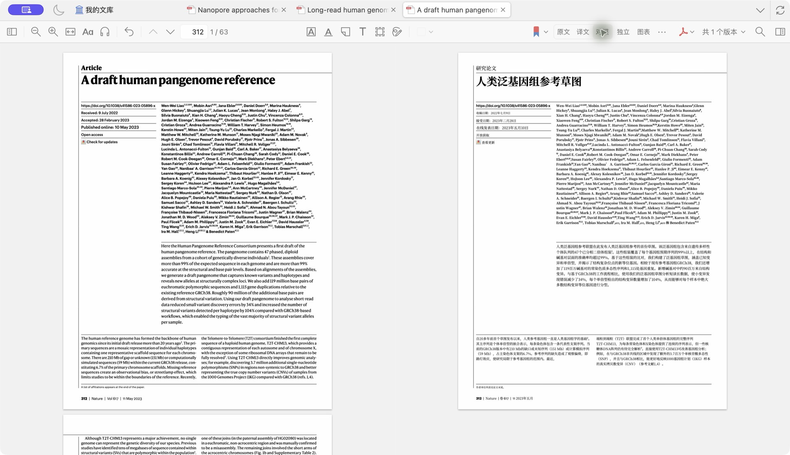
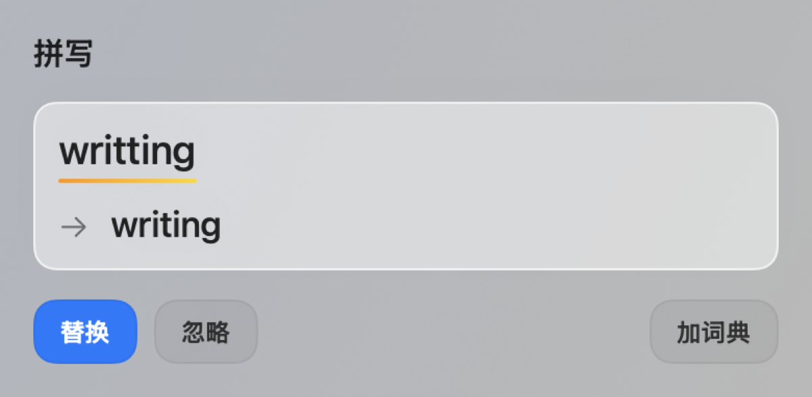

Look up a word
Select an English word for pronunciation, definitions, parts of speech, and inflections from the offline dictionary.
Translate PDFs with the layout intact, match phrases across languages, and ask about what you’re reading.
Start with the detail that stopped you. Keep the surrounding passage in view as you look it up, ask a question, or open a translation.
Select an English word for pronunciation, definitions, parts of speech, and inflections from the offline dictionary.
Attach a selected passage to your question. Read the streaming reply, ask a follow-up, or use web search for supporting sources.
Translate a page or a full document, then compare the original PDF and its translation in Zotero.
Switch from a definition to a question or a bilingual view using the same sample passage.
A reader can often infer the meaning of an unfamiliar term from the surrounding text. A quick lookup can help them check their interpretation.
infer verb
To reach a conclusion from evidence or reasoning.
A reader can often infer the meaning of an unfamiliar term from the surrounding text. A quick lookup can help them check their interpretation.
What does the author mean?
The author means that nearby words and sentences can give you clues to a term’s meaning.
A reader can often infer the meaning of an unfamiliar term from the surrounding text.
读者通常可以根据上下文推断陌生术语的含义。
Translate a page or an entire PDF while keeping the page layout. Pair source and translation 1:1 by page, scroll them together, and mark passages in Zotero.
Original and translation share a reading position.
Follow text, figures, and tables on the translated page.
Find corresponding text and save notes with Zotero’s native palette.
Keep your place while checking another page.
Jump to a figure or table in the pane you choose.
Zoom into a figure or save it as a PNG.

Open the original and translated PDF in two native panes. Linked scrolling follows your reading position from either side.
Turn on the reading position prompt to return to where you left off. Completed translations are stored locally and can reopen with the source.
Hover for a quick gloss. Select a phrase to see its counterpart, then choose from eight Zotero colors to highlight or underline it.
Keep the original open while a translation runs. Track progress, stop or retry a task, and switch between the original, translated, and side-by-side views.
Use the same reading tools across the desktop, your browser, and your PDF reader.
Translate selected or pasted text with Apple’s on-device translation, ask GPT for a closer translation, or use Explain to unpack terminology and reasoning. Set the direction manually or use automatic language detection.
Translate a web page inline, paragraph by paragraph, as you scroll. Pause, resume, or restore the original. For PDFs, choose a page or the full document and switch among original, translated, and bilingual views.
On macOS, translate a page or the whole document, then open the generated translation in the PDF reader you were already using.
Review spelling and GPT writing suggestions in Word. Compare the original and revision before applying an edit, dismissing it, or adding a word to your dictionary.
Read the setup guide ↗
A short product film about reading, translating, and writing on macOS.
Watch on GitHub ↗The installer supports Apple Silicon Macs. Full PDF translation requires macOS 15 or later. Apple’s on-device passage translation requires macOS 26 and the relevant language packs.
Sign in to Codex CLI once and save its path in Ask for GPT settings. Ask for GPT starts the CLI when an AI feature needs it.
English dictionary lookup runs offline. Completed PDF translations are stored on your Mac. AI requests send the relevant text and context through your configured Codex connection.
Use a PDF with selectable text, or run OCR on scanned pages before translating.
The bundled add-on supports Zotero 9.x and 10.0.x. Follow the Zotero guide to install the add-on and prepare the PDF translation environment.
macOS 1.1.61 for Apple Silicon.